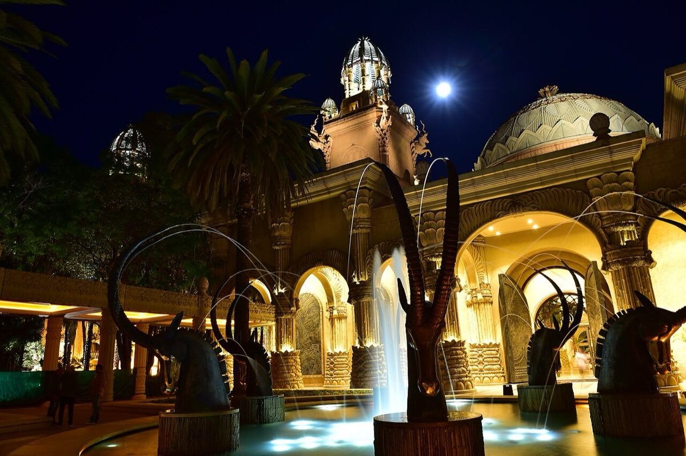
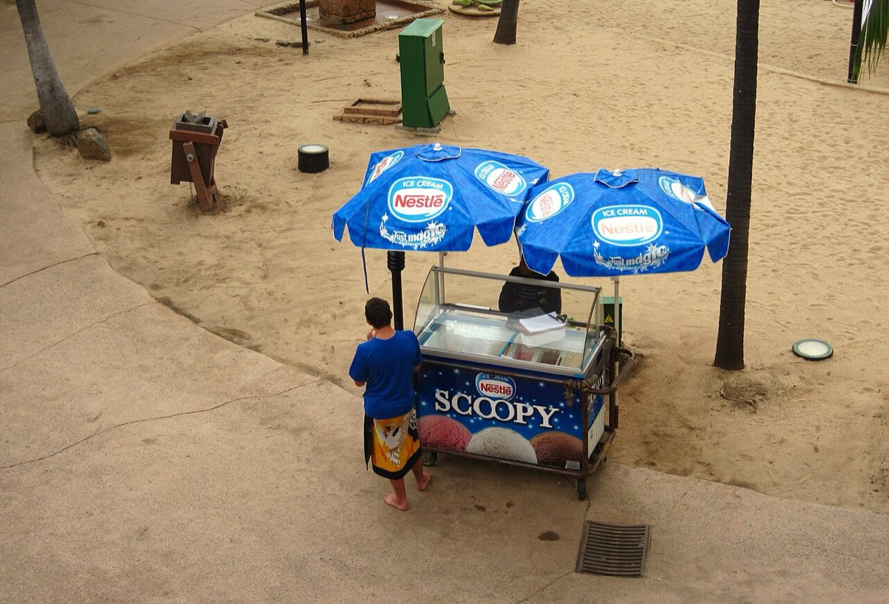

What to know
- Past spring break weekends drew more than 35,000 people to DJ events at the resort.
- No U.S. spring break operators run trips here.
- Pilanesberg National Park next door offers Big Five safaris.
South Africa · International · Spring Break 2027
South Africa's resort city, known for its Valley of the Waves water park. Sun City's "spring break" is a late-September event, since spring falls then in the southern hemisphere.
Updated
Sun City scored 20/100 (#21 of 21, "Quiet") in our Spring Break 2026 popularity rating, based on visitation, search buzz and college crowds. South Africa's resort city, known for its Valley of the Waves water park. Sun City's "spring break" is a late-September event, since spring falls then in the southern hemisphere.
Fly into JNB, then about 2.5 hrs by road.
No 2027 spring break events have been announced for Sun City yet. Lineups are usually announced in December and January.
Most college spring breaks in 2027 fall between March 6 and March 28. Easter is March 28, 2027, which makes the season early and compressed.
Clips from Sun City.

